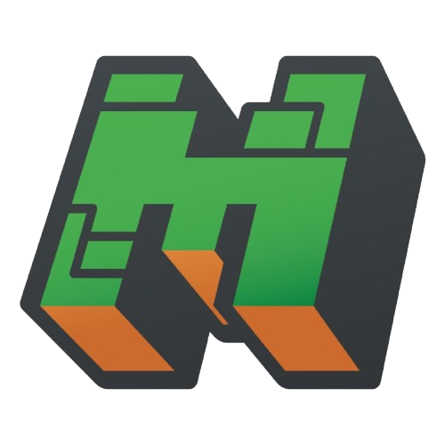
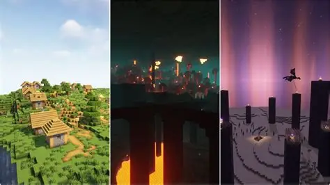
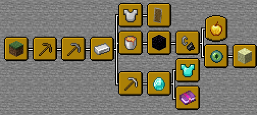
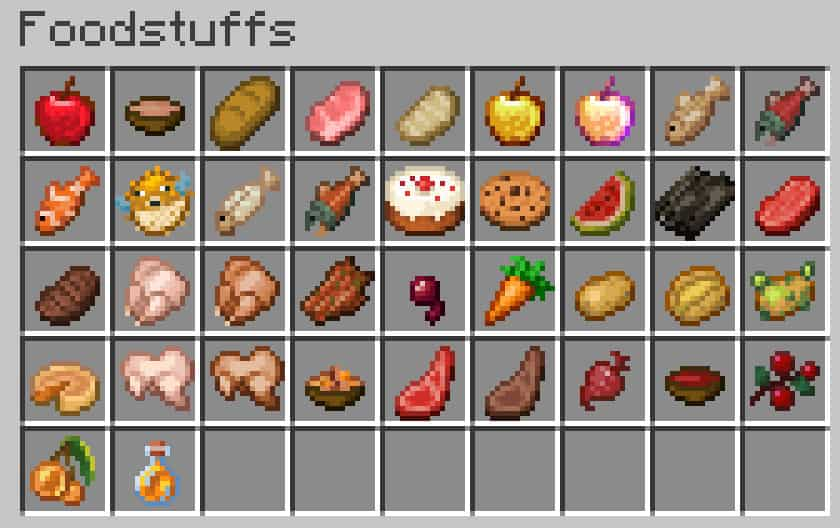
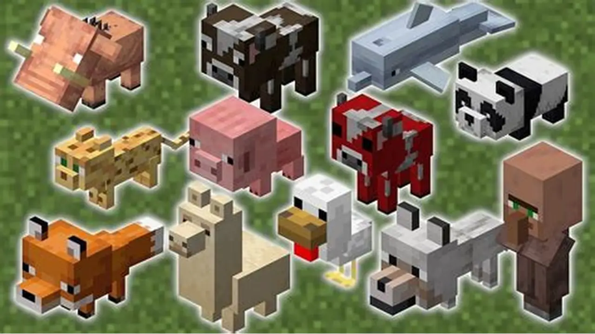
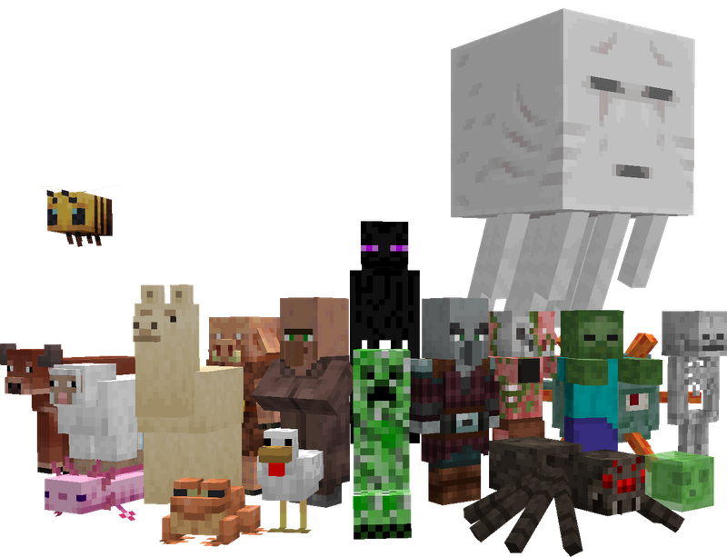
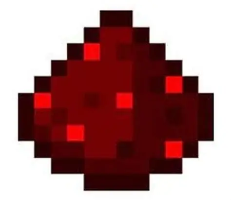

O universo Minecraft🌏
O jogo se divide em quatro elementos fundamentais que definem a experiência do jogador:

1. As três dimensões
Overworld (Mundo Comum): Onde o jogo começa. Tem florestas, oceanos, vilas e montanhas. Nether: Um mundo subterrâneo de lava e perigos, essencial para conseguir materiais raros. The End: O "fim do jogo", uma dimensão sombria onde vive o chefe final, o Ender Dragon.

2. Sobrevivência e Progressão
Necessidades: O jogador precisa se alimentar para recuperar vida e construir abrigos contra perigos. Evolução: Você melhora suas ferramentas em uma ordem de poder: Madeira ➔ Pedra ➔ Ferro ➔ Diamante ➔ Netherita.


3. As Criaturas (Mobs)
Amigáveis: Vacas, ovelhas e galinhas (fornecem comida e recursos). Inimigos: Monstros que atacam no escuro, como o icônico Creeper (que explode), Esqueletos e Zumbis.


4. Engenharia com Redstone
O jogo possui um minério chamado Redstone, que funciona como eletricidade. Com ele, é possível criar automações, portas automáticas e sistemas complexos de engenharia.
